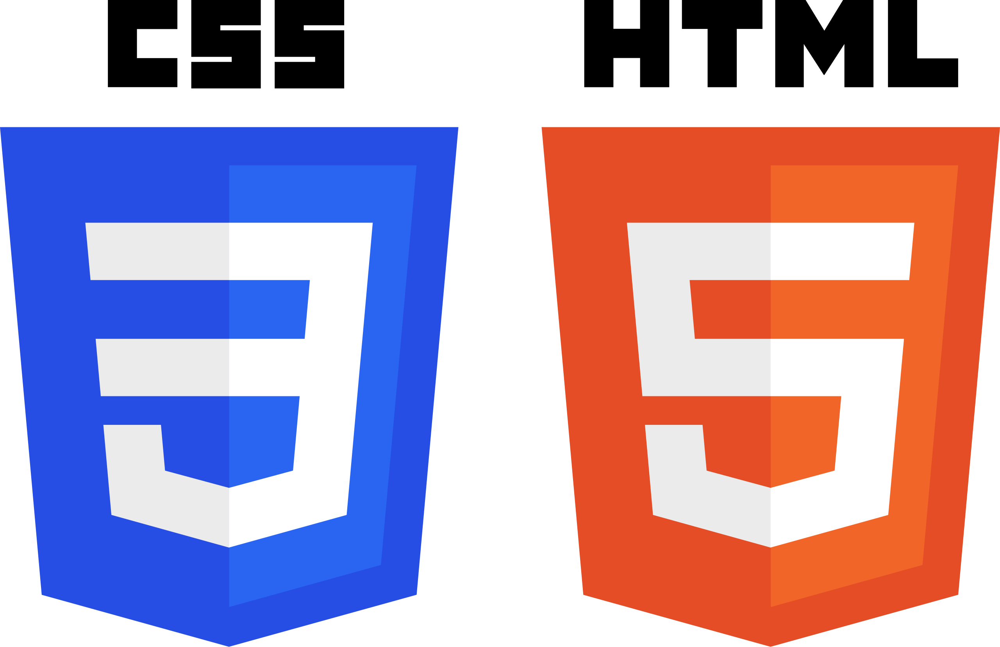

Sobre mí

¡Hola! Soy Eduardo Elias Chacin Gonzalez, soy un chico joven que está empezando en el mundo de la informatica (he de decir que me está encantando), algo que me caracteriza es que soy muy curioso y ambicioso, así como descubirir elementos que me puedan resultar dificiles pero me los propongo como un reto, también soy alguien que desea poder desarrollar sus habilidades proximamente, tales como:
- Programación
- Desarrollo web
- Administración de sistemas
Y respecto a los lenguajes que manejo por el momento son:

Mis proyectos
- Práctica de estructura básica de HTML5
- Biografía de Juan Carlos Aragón
- Prácticas de formularios